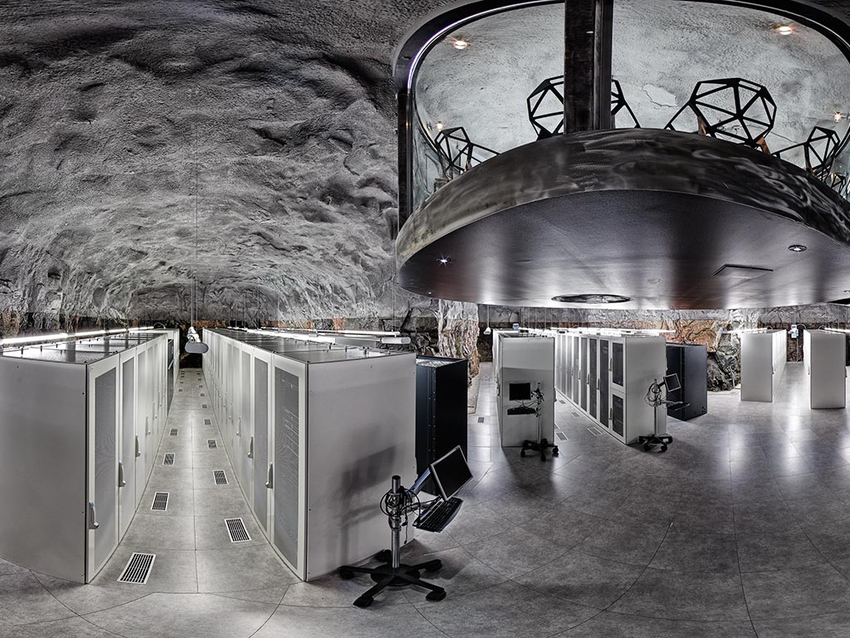

L'utilisation non-prévu
des data-centers par la chaleur produite ...

Les data-centers sont de très gros consommateurs d’électricité. Il faut donc trouver une alternative à sa consommation. L’idée principale est de réduire l’utilisation de la climatisation. Plusieurs solutions pour parer ou réduire ce coût énergétique existent. Tout d’abord, nous pouvons jouer sur la localisation des data-centers. Plusieurs exemples existent déjà. En effet, Google a construit un centre de données en Finlande. Cependant, il ne se trouve pas sur la terre ferme ! Il se trouve en réalité dans la mer. Ainsi, la salle n’a donc pas ou peu besoin de climatisation. Microsoft a eu la même idée, mais dans l’océan Atlantique.

Aperçu d'un Data-Center
Ensuite, les data-centers peuvent être utilisés pour récupérer de la chaleur. C’est le cas du data-center du groupe téléphonique Illiad, à Paris. Le centre de données se trouve enterré. Il permet donc de chauffer 150 logements sociaux. Au-delà d’alimenter les radiateurs, il alimente aussi une piscine. Il est donc possible de prendre une douche chaude grâce aux data-centers !
Enfin, le rôle du data-center peut être encore plus pertinent. Ces centres de données possèdent un rôle important dans une entreprise. L’envoi de fichiers ou autres sont non négociables. Les data-centers offrent donc un gain de temps aux entreprises. C’est à Stockholm, en Suède que son utilisation est très intéressante. Ils alimentent les data-centers par éoliennes, centrales hydroélectriques et panneaux solaires. Comme à Paris, ils récupèrent la chaleur pour la redistribuer. Cependant, la ville se veut attractive pour les entreprises. Ils baissent certains taux afin d’obtenir plus d’entreprises. Alors, qui dit plus d’entreprises dit plus de données. Par conséquent, plus de chaleur créée signifie plus de logements chauffés. Ainsi, Stockholm espère produire 10 % de son énergie via cette démarche.
Aperçu d'un Data-Center
Une autre hypothèse serait de revoir la conception des data-centers. Peut-être qu’avec d’autres matériaux, ce serait possible. Malheureusement, peu de projets sont en cours, du moins officiellement.
Cependant, l’utilisateur pourrait réduire lui aussi son utilisation. Chaque individu est un consommateur. S’il arrête de consommer, la chaîne se brise. Il est malgré tout presque impossible de modifier notre mode de vie. Les notifications, les messages font tout pour nous empêcher de nous déconnecter. C’est sûrement trop utopique.
En définitive, la climatisation des data-centers peut être déjoué via la localisation. Cette dernière se trouvant majoritairement dans des régions froides. Il est possible d’utiliser la chaleur des data-centers. C’est assez écologique, surtout en période hivernale. Niveau entreprise, des stratégies peuvent être mises en place.